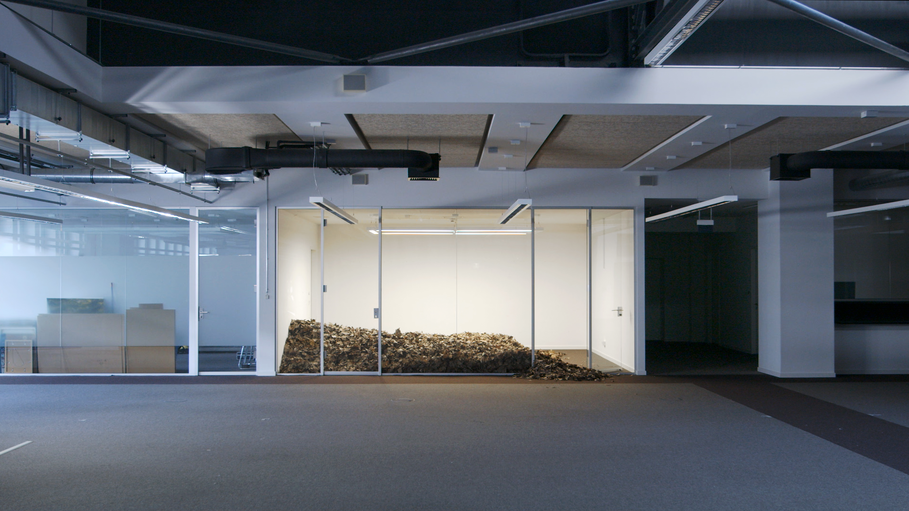
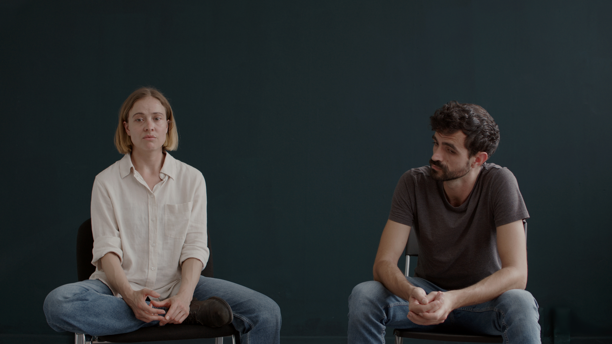

We Killed Seasons, 2026
Vidéo, son stereo
26:40 min.



We Killed Seasons (2026) suit cinq personnes qui habitent un monde où les saisons ont disparu. Se déroulant lentement et baigné par les rayons du soleil, le film explore l'éradication des cycles naturels comme des repères temporels fondamentaux, déstabilisant les rythmes humain et animal. Le lieu semble familier, bien qu'il se trouve profondément transformé. Aucun d'entre eux ne se rencontre, sauf deux qui échangent, entre autres, sur l'évolution de la représentation du soleil. L’une tente de donner sens à un monde où le temps s’est désagrégé, tandis qu’un autre déambule. Une cinquième se livre à une danse solitaire, presque hystérique, laissant transparaître un profond sentiment de désir et de mélancolie.
Avec : J.R. Blank, Tintin Cooper, Anna-Carolina Stuckart, Nouri Chamari Dance : Justine Del Corte Voix : Jessica Edwards Consultante au scénario : Gemma Kerr Révision additionnelle des textes: Jessica Edwards Construction scénique : Oliver Walker Prise de son, musique : Zach Hart Lumière : Andres Villareal Artiste 3D : Nestaeric Remerciements : Christine Cheung, Kathrin Grzeschniok, Laura Leppert, Bertolt Meyer, Daniel Theiler
Nous reconnaissons le soutien du Conseil des arts du Canada.